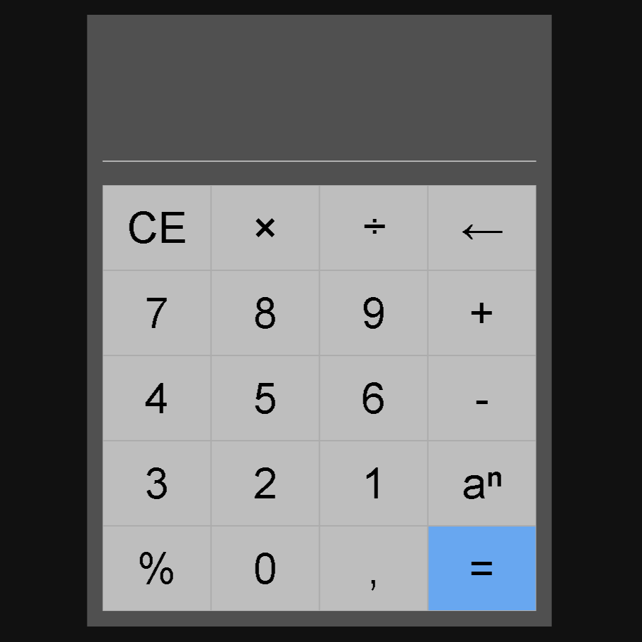

Olá, meu nome é
Matheus Morante,
Estudante de TI
Sempre fui apaixonado por tecnologia e, há 2 anos, comecei estudar a área. Atualmente, estou concentrado no desenvolvimento front-end, trabalhando para aprimorar minhas habilidades em HTML, CSS, JavaScript e suas bibliotecas e frameworks associadas. Estou entusiasmado em continuar aprendendo e crescer em um campo que está em constante evolução, e estou em busca de minha primeira oportunidade de trabalho para aplicar e expandir meus conhecimentos.
Habilidades
-
HTML
Iniciante
-
CSS
Iniciante
-
JavaScript
Iniciante
Projetos
-
Calculadora
Nesse projeto, desenvolvi um cronõmetro funcional com os principais botões - start, pause e reset. Incrementei funções que ao mesmo tempo que contasse cada segundo, os organizasse em horas, minutos e segundos, os formatando com 0 na esquerda quando fossem menor que 10. No decorrer deste, eu tornei mais consistente em alguns conceitos importantes, como funções, formatação de texto e lógica de programação.
-
Cronômetro
Neste projeto, foi desenvolvida uma calculadora funcional utilizando HTML, CSS e JavaScript. Durante o processo, foram aprimorados conhecimentos essenciais de programação, incluindo o uso de tabelas HTML para criar a estrutura dos botões da calculadora, aplicação de pseudoclasses para estilizar os botões e tornar as ações de passar o mouse e clicar mais identificáveis, criação de funções e uso do evento "onclick" para implementar a lógica das funcionalidades da calculadora. O método "document.getElementById()" foi fundamental para obter e manipular o conteúdo dos botões e do visor, assegurando o funcionamento correto e a obtenção dos resultados desejados.

Contato